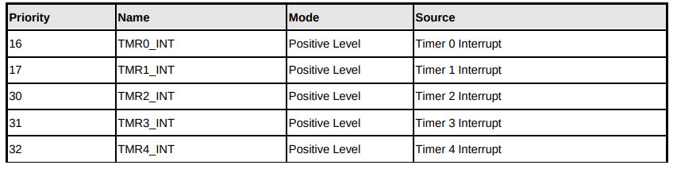
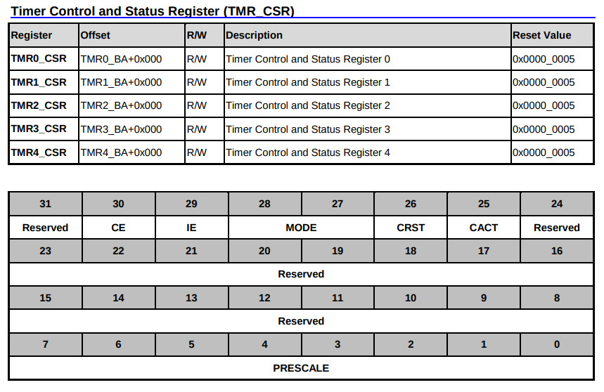
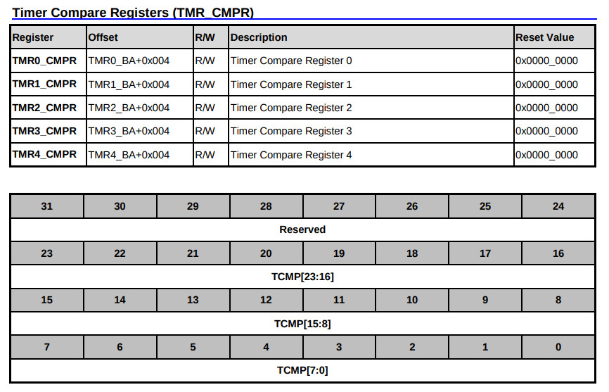
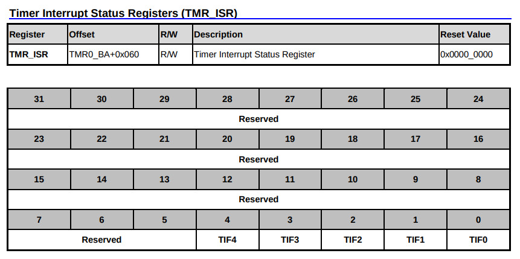

參考資訊：
https://github.com/OpenNuvoton/NUC970_NonOS_BSP
Timer Interrupt




.equ GPIOB_DIR, (0xb8003000 + 0x40)
.equ GPIOB_DATAOUT, (0xb8003000 + 0x44)
.equ CLK_PCLKEN0, (0xb0000200 + 0x18)
.equ AIC_MECR, (0xb8002000 + 0x130)
.equ AIC_EOSCR, (0xb8002000 + 0x150)
.equ TMR3_CSR, (0xb8001000 + 0x30)
.equ TMR3_CMPR, (0xb8001000 + 0x34)
.equ TMR3_DR, (0xb8001000 + 0x38)
.equ TMR_ISR, (0xb8001000 + 0x60)
.data
blink: .dcb 1
.text
.align 2
.global _start
_start: b reset
_undef: b .
_swi: b .
_pabort: b .
_dabort: b .
_reserved: b .
_irq: b irq_handler
_fiq: b .
reset:
mrs r0, cpsr
bic r0, #0x80
msr cpsr_c, r0
ldr r0, =AIC_MECR
ldr r1, =(1 << 31)
str r1, [r0]
ldr r0, =CLK_PCLKEN0
ldr r1, [r0]
ldr r2, =((1 << 3) | (1 << 11))
orr r1, r2
str r1, [r0]
ldr r0, =TMR3_CMPR
ldr r1, =(12000000 >> 1)
str r1, [r0]
ldr r0, =TMR3_CSR
ldr r1, =0x60000000
str r1, [r0]
ldr r0, =GPIOB_DIR
ldr r1, =(1 << 0)
str r1, [r0]
ldr r0, =GPIOB_DATAOUT
ldr r1, =(1 << 0)
str r1, [r0]
ldr r0, =blink
ldr r1, =0x00
str r1, [r0]
b .
irq_handler:
ldr r0, =blink
ldr r1, [r0]
cmp r1, #0x00
beq 1f
ldr r0, =GPIOB_DATAOUT
ldr r1, =(1 << 0)
str r1, [r0]
b 2f
1:
ldr r0, =GPIOB_DATAOUT
ldr r1, =~(1 << 0)
str r1, [r0]
2:
ldr r0, =blink
ldr r1, [r0]
eor r1, #0xff
str r1, [r0]
ldr r0, =AIC_EOSCR
ldr r1, =1
str r1, [r0]
ldr r0, =TMR_ISR
ldr r1, [r0]
orr r1, #8
str r1, [r0]
ldr r0, =TMR3_CSR
ldr r1, [r0]
orr r1, #(1 << 30)
str r1, [r0]
subs pc, lr, #4
.end
完成